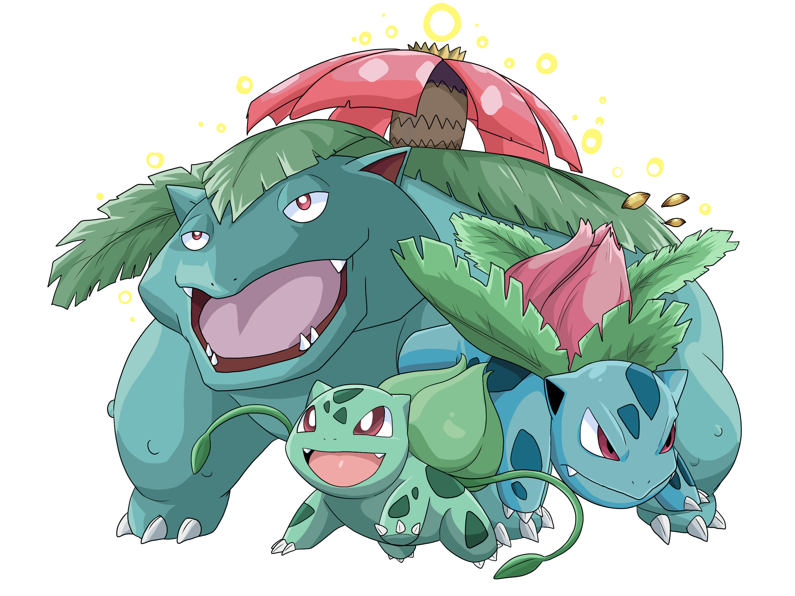

Bulbasaur is a small, quadruped Pokémon that has blue-green skin with darker patches. It has red eyes with white pupils and sclera and pointed, ear-like structures on top of its head. Its snout is short and blunt, and it has a wide mouth. A pair of small, pointed teeth are visible in the upper jaw when its mouth is open. Each of its thick legs ends with three sharp claws. On its back is a green plant bulb, which is grown from a seed planted there at birth. The bulb provides it with energy through photosynthesis as well as from the nutrient-rich seeds contained within.
Bulbasaur-->Ivysaur-->Venusaur
Bulbasaur was one of the first Pokémon designed by Ken Sugimori. Bulbasaur's name is a portmanteau of the words bulb and dinosaur. It was originally going to be named "Fushigidane" (フシギダネ), a portmanteau of fushigi (不思議), which means "mysterious" or "strange", and tané (種), which means "seed".